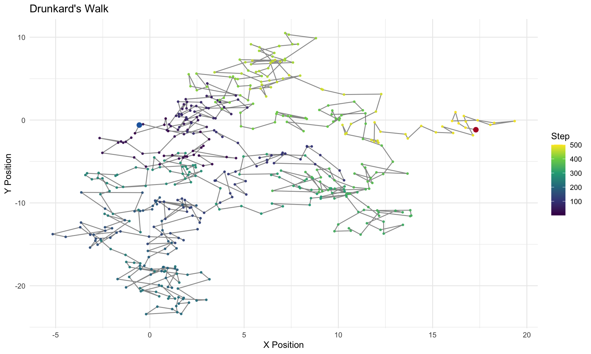
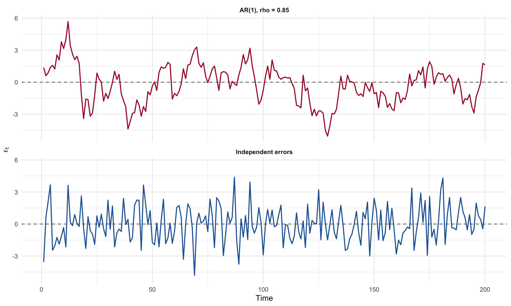
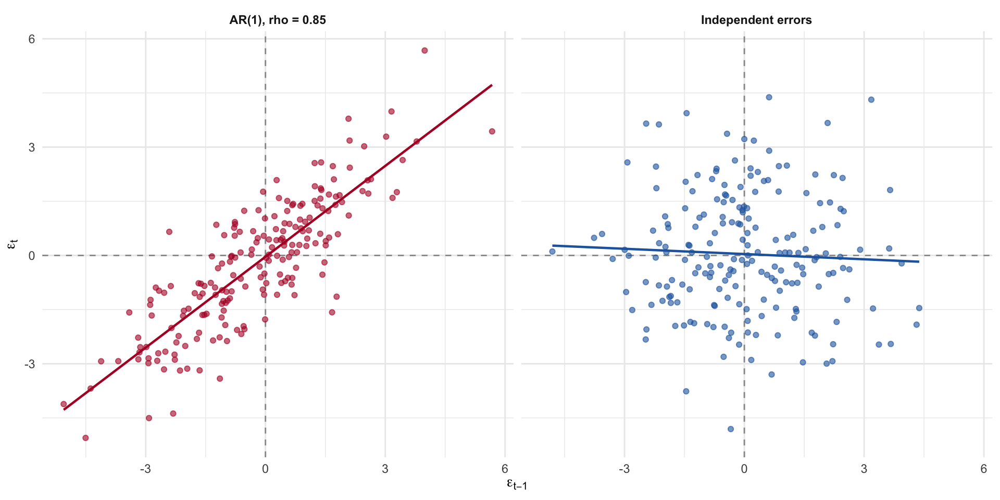
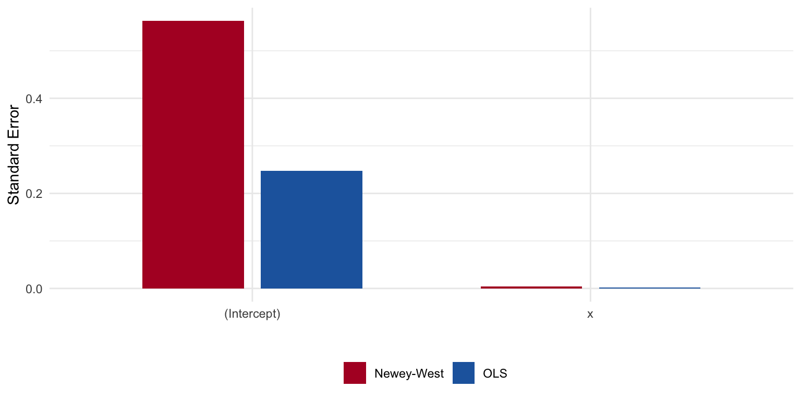
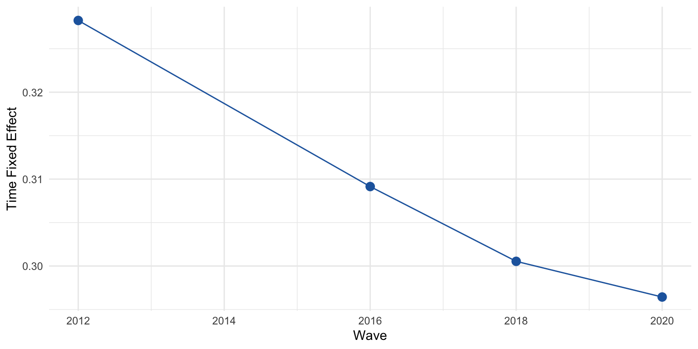
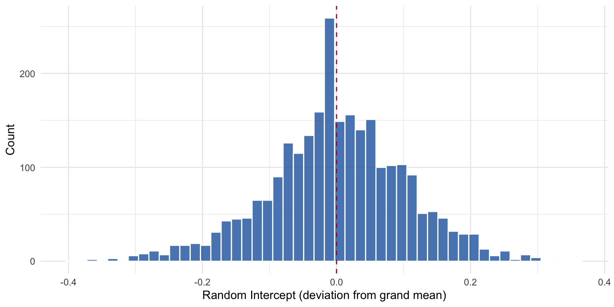
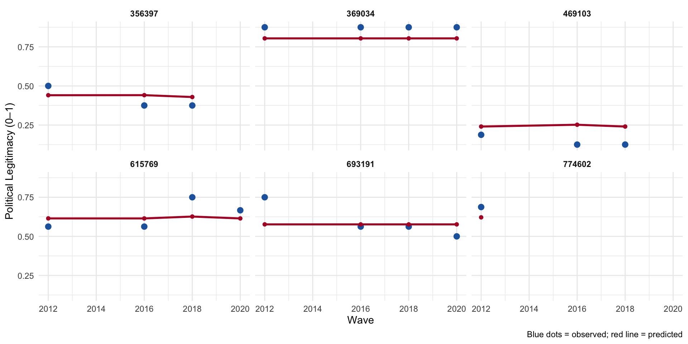

Autocorrelation, Panel Data, and Multilevel Models
Time Series Errors, Detection, GLS, and Hierarchical Structures
Part I: Autocorrelation
What happens when errors are correlated over time?
The Drunkard’s Walk
Imagine a drunkard staggering along a path. At each step, spins a dial and walks one step in that direction.
Each step is independent of the previous one, but the position of the drunkard at time \(t\) is the sum of all previous steps. Steps are independent, position is not.
This creates a path that wanders randomly over time, with a clear dependence between the position at time \(t\) and the position at time \(t-1\).
The Drunkard’s Walk: Visualized

Figure 1: A drunkard’s walk — each step is drawn from a normal distribution, and the path is the cumulative sum.
Time Series Data
Time series data are generally defined by observations of a single unit (e.g., a country, a person, a company) over a period of time. The defining feature of time series data is that the observations are ordered in time, and the value of the variable at one point in time may be correlated with its value at another point in time. This correlation is known as autocorrelation or serial correlation.
Autocorrelation is quite common — particularly with time series — and we’ll also see, panel — data. The problem again centers on the variance-covariance matrix of errors.
With heteroskedasticity, the trouble lived on the diagonal of \(E[\boldsymbol{\epsilon}\boldsymbol{\epsilon}^T]\): the variances were not constant. With autocorrelation, the problem lives in the off-diagonal entries: errors that should be uncorrelated with one another are not.
The Variance-Covariance Matrix of Errors
\[ E[\boldsymbol{\epsilon}\boldsymbol{\epsilon}^T] = \begin{bmatrix} \text{var}(\epsilon_1) & \text{cov}(\epsilon_1,\epsilon_2) & \text{cov}(\epsilon_1,\epsilon_3) & \cdots & \text{cov}(\epsilon_1,\epsilon_n)\\ \text{cov}(\epsilon_2,\epsilon_1) & \text{var}(\epsilon_2) & \text{cov}(\epsilon_2,\epsilon_3) & \cdots & \text{cov}(\epsilon_2,\epsilon_n)\\ \text{cov}(\epsilon_3,\epsilon_1) & \text{cov}(\epsilon_3,\epsilon_2) & \text{var}(\epsilon_3) & \cdots & \text{cov}(\epsilon_3,\epsilon_n)\\ \vdots & \vdots & \vdots & \ddots & \vdots\\ \text{cov}(\epsilon_n,\epsilon_1) & \text{cov}(\epsilon_n,\epsilon_2) & \cdots & \cdots & \text{var}(\epsilon_n) \end{bmatrix} \]
If the off-diagonal elements are non-zero, Gauss-Markov assumption of independent errors is violated. These off-diagonals are typically zero in cross-sectional data but rarely in panel or time-series data. The reason is relatively intuitive: whatever is left unexplained by the regression — the errors — will relate to one another over time. A shock today will be correlated with a shock tomorrow.
The AR(1) Process
The most common specification for an autocorrelated error process is the first-order autoregressive, or AR(1), model:
\[ \epsilon_t = \rho\,\epsilon_{t-1} + v_t, \qquad |\rho| < 1 \]
where \(v_t\) is well-behaved: constant variance, no residual autocorrelation, mean zero.
- When \(\rho > 0\), successive residuals tend to have the same sign — positive shocks are followed by positive shocks, and the residual plot shows long “runs” of over- and under-prediction.
- When \(\rho < 0\), the residuals alternate sign.
- When \(\rho = 0\), we are back in the OLS-works-just-fine world.
The ARMA Process
The AR(1) model can be generalized by adding a moving average (MA) component. The ARMA(1,1) process is:
\[ \epsilon_t = \rho\,\epsilon_{t-1} + v_t + \theta\,v_{t-1} \]
The AR part (\(\rho\,\epsilon_{t-1}\)) captures persistence — the current error depends on its own past. The MA part (\(\theta\,v_{t-1}\)) captures a short-lived shock — the current error also depends on last period’s innovation.
More generally, an ARMA(\(p\), \(q\)) process includes \(p\) autoregressive lags and \(q\) moving average lags:
\[ \epsilon_t = \rho_1\,\epsilon_{t-1} + \cdots + \rho_p\,\epsilon_{t-p} + v_t + \theta_1\,v_{t-1} + \cdots + \theta_q\,v_{t-q} \]
Consequences for OLS
With autocorrelation, OLS is still unbiased but is no longer BLUE:
- The variance matrix of the estimated coefficients is wrong.
- Inferences (t-tests, F-tests, confidence intervals) are distorted.
- \(\hat{\sigma}^2\) is wrong — and typically an underestimate of \(\sigma^2\).
- As a result, we tend to overestimate \(R^2\) and understate standard errors, producing spuriously “significant” findings.
For an AR(1) process, the covariance structure is:
\[ \text{cov}(\epsilon_t, \epsilon_{t+s}) = E[\epsilon_t \epsilon_{t+s}] = \sigma^2 \rho \]
The Covariance Matrix Under Gauss-Markov
Under the Gauss-Markov assumptions:
\[ \Sigma_{\epsilon, \epsilon} = \begin{bmatrix} \sigma^2&\cdots & 0\\ 0&\sigma^2 & 0\\ \vdots & \vdots & \vdots\\ 0&\cdots &\sigma^2\\ \end{bmatrix} \]
But now, with correlated errors via \(\rho\):
\[ \Sigma_{\epsilon, \epsilon} = \begin{bmatrix} \sigma^2&\sigma^2\rho & \cdots & \sigma^2\rho^{n-1}\\ \sigma^2\rho & \sigma^2 & \cdots & \sigma^2\rho^{n-2}\\ \vdots & \vdots & \ddots & \vdots\\ \sigma^2\rho^{n-1} & \sigma^2\rho^{n-2} & \cdots & \sigma^2\\ \end{bmatrix} \]
The Covariance Matrix (cont.)
Which is:
\[ \Sigma_{\epsilon, \epsilon} = \sigma^2 \begin{bmatrix} 1&\rho & \cdots & \rho^{n-1}\\ \rho & 1 & \cdots & \rho^{n-2}\\ \vdots & \vdots & \ddots & \vdots\\ \rho^{n-1} & \rho^{n-2} & \cdots & 1\\ \end{bmatrix} \]
With heteroskedasticity, the problem was that the diagonal entries were not constant. With autocorrelation, the problem is that the off-diagonal entries are not zero. These errors are defined by an AR(1) process.
First Order Autoregressive Errors and the Bias of \(\hat{\sigma}^2\)
\[ \epsilon_t = \rho\,\epsilon_{t-1} + v_t, \qquad |\rho| < 1 \]
By squaring \(\epsilon_t = \rho\,\epsilon_{t-1} + v_t\) and taking expectations:
\[ E[\epsilon_t^2] = E[(\rho\,\epsilon_{t-1} + v_t)^2] = \rho^2 E[\epsilon_{t-1}^2] + 2\rho E[\epsilon_{t-1} v_t] + E[v_t^2] = \rho^2 E[\epsilon_{t-1}^2] + \sigma^2 \]
Because the correlation between \(\epsilon_{t-1}\) and \(v_t\) is zero, the cross term vanishes.
Solving for the Variance Under Stationarity
Under stationarity, \(E[\epsilon_t^2] = E[\epsilon_{t-1}^2]\). Substituting:
\[ \text{Var}(\epsilon_t) = \rho^2 \text{Var}(\epsilon_t) + \sigma^2 \]
Collecting terms:
\[ \text{Var}(\epsilon_t) - \rho^2 \text{Var}(\epsilon_t) = \sigma^2 \quad\Longrightarrow\quad \text{Var}(\epsilon_t)(1 - \rho^2) = \sigma^2 \quad\Longrightarrow\quad \text{Var}(\epsilon_t) = \frac{\sigma^2}{1 - \rho^2} \]
The restriction \(|\rho| < 1\) matters: it says that \(1 - \rho^2 > 0\), so the variance is finite. As \(\rho \to 1\), the denominator shrinks toward zero and the variance of the errors increases. For example, with \(\rho = 0.8\), the variance of \(\epsilon_t\) is \(\sigma^2 / 0.36 \approx 2.78\,\sigma^2\).
Autocovariances at Different Lags
At lag 1:
\[ \text{cov}(\epsilon_t, \epsilon_{t-1}) = E[\epsilon_t \epsilon_{t-1}] = \frac{\sigma^2 \rho}{1-\rho^2} \]
At lag 2:
\[ \text{cov}(\epsilon_t, \epsilon_{t-2}) = \frac{\sigma^2 \rho^2}{1-\rho^2} \]
At lag \(k\):
\[ E[\epsilon_t \epsilon_{t-k}] = \frac{\sigma^2 \rho^k}{1-\rho^2} \]
Demonstrating the Bias of \(\hat{\sigma}^2\) Under AR(1) Errors
Recall,
\[ e_t = \epsilon_t - \bar{\epsilon} - \hat{\beta}_1(x_t - \bar{x}), \qquad \hat{\beta}_1 = \frac{\sum(x_t - \bar{x})\epsilon_t}{\sum(x_t - \bar{x})^2} \]
Because \(e_t\) is linear in the \(\epsilon_t\)’s, the expected RSS splits as:
\[ E\!\left[\sum_{t=1}^n e_t^2\right] = \underbrace{E\!\left[\sum_{t=1}^n \epsilon_t^2\right]}_{\text{Term 1}} -\underbrace{E\!\left[n\bar{\epsilon}^2\right]}_{\text{Term 2}} -\underbrace{E\!\left[\hat{\beta}_1^2\sum(x_t-\bar{x})^2\right]}_{\text{Term 3}} \]
The Bias: Term by Term
Term 1:
\[ E\!\left[\sum_{t=1}^n \epsilon_t^2\right] = \frac{n\sigma^2}{1-\rho^2} \]
Term 2 requires expanding \(n\bar{\epsilon}^2 = \frac{1}{n}\bigl(\sum_t \epsilon_t\bigr)^2\):
\[ E\!\left[n\bar{\epsilon}^2\right] = \frac{1}{n}\sum_{s=1}^n\sum_{t=1}^n E[\epsilon_s\epsilon_t] = \frac{\sigma^2}{n(1-\rho^2)}\sum_{s=1}^n\sum_{t=1}^n \rho^{|s-t|} \]
Evaluating the double sum:
\[ \sum_{s=1}^n\sum_{t=1}^n \rho^{|s-t|} = n + 2\sum_{k=1}^{n-1}(n-k)\rho^k \approx \frac{2n\rho}{1-\rho} \quad \text{for large } n \]
The Bias: Final Result
Term 3 follows from the variance of \(\hat{\beta}_1\) under AR(1) errors:
\[ E\!\left[\hat{\beta}_1^2\sum(x_t-\bar{x})^2\right] = \frac{2\sigma^2\rho}{1-\rho^2} \]
Combining all three terms and dividing by \((n-2)\):
\[ \boxed{E[\hat{\sigma}^2] = \frac{\sigma^2\!\left[n - \tfrac{2}{1-\rho} - 2\rho\right]}{n-2}} \]
When \(\rho > 0\), both correction terms are positive, so
\[ n - \frac{2}{1-\rho} - 2\rho \;<\; n-2 \quad\Longrightarrow\quad E[\hat{\sigma}^2] < \sigma^2 \]
OLS underestimates the true error variance.
Part II: Detection
How do we know autocorrelation is present?
Visual Demonstration

Figure 2: Residuals from an AR(1) process (top) show clear persistence — long runs above and below zero — while independent errors (bottom) look like noise.
The Lagged Residual Plot
Plot \(\epsilon_t\) against \(\epsilon_{t-1}\). Under the null of no autocorrelation, the points should fill all four quadrants roughly equally. Under positive autocorrelation, they cluster along the 45-degree line.

Figure 3: Lagged residual plot. Clustering along the positive diagonal is the signature of positive first-order autocorrelation.
The Runs Test
The runs test is a nonparametric check for independence. It counts the number of “runs” — consecutive sequences of positive or negative residuals — and compares this count to what we’d expect under independence.
Let \(n_1\) = the number of positive residuals, \(n_2\) = the number of negative residuals, and \(k\) = the total number of runs. Under the null of independence,
\[ E(k) = \frac{2 n_1 n_2}{n_1 + n_2} + 1, \qquad \text{Var}(k) = \frac{2 n_1 n_2 (2 n_1 n_2 - n)}{n^2 (n - 1)} \]
Positively autocorrelated residuals produce too few runs; negatively autocorrelated residuals produce too many.
The Durbin-Watson Statistic
The Durbin-Watson statistic is the workhorse test for first-order autocorrelation:
\[ d = \frac{\sum_{t=2}^{n}(e_t - e_{t-1})^2}{\sum_{t=1}^{n} e_t^2} \]
In large samples, \(d \approx 2(1 - \hat{\rho})\), so:
- \(d \approx 2\): no first-order autocorrelation.
- \(d \to 0\): strong positive autocorrelation.
- \(d \to 4\): strong negative autocorrelation.
Durbin-Watson Decision Rules
Durbin and Watson derived lower and upper bounds, \(d_L\) and \(d_U\):
- \(d < d_L\) → reject the null; evidence of positive autocorrelation.
- \(d_L < d < d_U\) → inconclusive.
- \(d_U < d < 4 - d_U\) → do not reject.
- \(4 - d_U < d < 4 - d_L\) → inconclusive.
- \(d > 4 - d_L\) → reject the null; evidence of negative autocorrelation.
Assumptions: an intercept must be present, errors are assumed normal, lagged dependent variables cannot appear in the model, and there can be no missing values.
Durbin-Watson: Application
=== Durbin-Watson tests ===AR(1) errors:
Durbin-Watson test
data: fit_ar
DW = 0.33758, p-value < 2.2e-16
alternative hypothesis: true autocorrelation is greater than 0
Independent errors:
Durbin-Watson test
data: fit_iid
DW = 2.0779, p-value = 0.6849
alternative hypothesis: true autocorrelation is greater than 0The AR(1) model returns a Durbin-Watson statistic far below 2, with a tiny p-value; the iid model sits close to 2, as expected.
Part III: Remedies
Generalized Least Squares and Robust Standard Errors
Generalized Least Squares
If the off-diagonals of \(E[\boldsymbol{\epsilon}\boldsymbol{\epsilon}^T]\) are the problem, and we know what the off-diagonals look like, we can transform the data to remove them. This is generalized least squares (GLS).
The strategy:
- Write \(E[\boldsymbol{\epsilon}\boldsymbol{\epsilon}^T] = \sigma^2 \boldsymbol{\Omega}\).
- Find a matrix \(\mathbf{D}\) such that \(\mathbf{D}^T\mathbf{D} = \boldsymbol{\Omega}^{-1}\).
- Premultiply the entire regression equation by \(\mathbf{D}\): the transformed errors \(\boldsymbol{\epsilon}^* = \mathbf{D}\boldsymbol{\epsilon}\) satisfy \(E(\boldsymbol{\epsilon}^*\boldsymbol{\epsilon}^{*T}) = \sigma^2 \mathbf{I}\).
- Run OLS on the transformed data. The result is BLUE.
The \(\boldsymbol{\Omega}\) Matrix for AR(1)
For an AR(1) process,
\[ \boldsymbol{\Omega} = \frac{1}{1-\rho^2} \begin{bmatrix} 1 & \rho & \rho^2 & \cdots & \rho^{n-1}\\ \rho & 1 & \rho & \cdots & \rho^{n-2}\\ \rho^2 & \rho & 1 & \cdots & \rho^{n-3}\\ \vdots & \vdots & \vdots & \ddots & \vdots\\ \rho^{n-1} & \rho^{n-2} & \cdots & \rho & 1 \end{bmatrix} \]
The Transformation Matrix
We need a matrix \(\mathbf{D}\) such that \(\mathbf{D}\mathbf{D}^T = \boldsymbol{\Omega}^{-1}\). For AR(1),
\[ \mathbf{D} = \begin{bmatrix} \sqrt{1-\rho^2} & 0 & 0 & \cdots & 0\\ -\rho & 1 & 0 & \cdots & 0\\ 0 & -\rho & 1 & \cdots & 0\\ \vdots & \vdots & \vdots & \ddots & \vdots\\ 0 & 0 & \cdots & -\rho & 1 \end{bmatrix} \]
Premultiplying by \(\mathbf{D}\) gives the transformed model:
\[ \mathbf{D}\mathbf{y} = \mathbf{D}\mathbf{X}\boldsymbol{\beta} + \mathbf{D}\boldsymbol{\epsilon} \quad\Longleftrightarrow\quad \mathbf{y}^* = \mathbf{X}^*\boldsymbol{\beta} + \boldsymbol{\epsilon}^* \]
The interior rows implement “quasi-differencing”: \(y^*_t = y_t - \rho y_{t-1}\).
Feasible GLS
GLS assumes \(\rho\) is known, which is almost never true. Feasible GLS (FGLS) estimates it:
- Estimate the regression by OLS and save the residuals, \(e_t\).
- Regress \(e_t\) on \(e_{t-1}\) to get \(\hat{\rho}\).
- Build \(\mathbf{D}\) using \(\hat{\rho}\) and run GLS.
The Cochrane-Orcutt procedure iterates this: after running GLS, re-compute the residuals, re-estimate \(\hat{\rho}\), and repeat until \(\hat{\rho}\) stops changing.
FGLS: Application
Estimated rho =0.834 (true value = 0.85)=== OLS estimates (ignoring autocorrelation) === Estimate Std. Error t value Pr(>|t|)
(Intercept) 2.4322 0.2476 9.8244 0
x 0.0434 0.0021 20.3268 0
=== FGLS estimates (quasi-differenced) === Estimate Std. Error t value Pr(>|t|)
(Intercept) 0.3605 0.1449 2.4884 0.0137
x_star 0.0462 0.0072 6.3857 0.0000Newey-West Standard Errors
A different strategy is to leave the coefficients alone but correct the standard errors directly. Newey-West standard errors estimate the off-diagonal covariances from the data. This is the autocorrelation analogue of White’s robust standard errors for heteroskedasticity.
Estimate OLS_SE NeweyWest
(Intercept) 2.4322 0.2476 0.5627
x 0.0434 0.0021 0.0043The Newey-West standard errors are substantially larger than the naive OLS ones, reflecting the lost information from correlated errors.
Comparing Standard Errors

Figure 4: OLS standard errors understate uncertainty when errors are autocorrelated. Newey-West corrects for it.
Autocorrelation: Summary
- Detection: plot residuals over time, plot \(e_t\) against \(e_{t-1}\), run a Durbin-Watson test, or use a runs test.
- Model: if you believe an AR(1) story, use FGLS (or Cochrane-Orcutt) to transform the data so the transformed errors are iid.
- Correct: if you’d rather not commit to a specific error process, leave the coefficients alone and use Newey-West (HAC) standard errors.
The right choice depends on how confident you are in the error model. FGLS is more efficient if the AR(1) assumption is correct; Newey-West is more robust if we’re unsure.
Part IV: Panel Data
Multiple units observed over time
What Are Panel Data?
Panel data are common in political science. Unlike time-series data, multiple units are observed at multiple points in time.
- Longitudinal data follows a panel structure, but typically units are observed over a long period of time.
- Time Series Cross Sectional (TSCS) data are observed over a shorter time span, but with many units.
- Panel survey — the same individuals are surveyed repeatedly over time.
- Repeated cross-section (RCS) — different units are observed at each time point, but the same variables are measured. Does not have the same autocorrelation structure.
Panel data create challenges for inference because of autocorrelation. Autocorrelated errors might exist in the ways we discussed; they may also exist due to stable unit effects.
Dynamic Relationships
Let’s think about the problem of autocorrelation and dynamic relationships:
- Units should have correlated errors over time, because observation is repeated.
- Dynamic relationships between variables should correct for these correlated errors.
- This involves the distinction between contemporaneous and lagged effects, as well as time-invariant and time-varying covariates.
Fixed vs. Dynamic Effects
A fixed (or static) effect is the contemporaneous association between \(x\) and \(y\) at the same point in time — e.g., how income this year relates to vote choice this year.
A dynamic effect involves temporal ordering: how \(x\) at time \(t-1\) influences \(y\) at time \(t\). Dynamic models use lagged predictors to establish temporal precedence, a necessary (but not sufficient) condition for causal inference.
A time-invariant predictor does not change across waves (e.g., race, sex). These are collinear with unit fixed effects and are absorbed by the within-transformation.
A time-varying predictor changes within a unit over time (e.g., income, approval ratings).
The Cross-Lagged Panel Model
The CLPM leverages temporal structure to investigate reciprocal relationships between variables over time:
\[ \begin{align} y_{it} &= \alpha_{y} + \beta_{yy}y_{it-1} + \beta_{xy}x_{it-1} + \varepsilon_{y,it}\\ x_{it} &= \alpha_{x} + \beta_{xx}x_{it-1} + \beta_{yx}y_{it-1} + \varepsilon_{x,it} \end{align} \]
- \(\beta_{yy}\) and \(\beta_{xx}\) are autoregressive parameters — how much does a variable predict itself over time?
- \(\beta_{xy}\) and \(\beta_{yx}\) are the cross-lagged parameters — the dynamic effects of interest.
The CLPM: Path Diagram
Bias from Stable Unit Effects
The critical limitation of the CLPM is that it does not account for stable unit effects. Decompose each observed variable:
\[ \begin{align} x_{it} &= \mu_x + \eta_{x,i} + \omega_{x,it} \\ y_{it} &= \mu_y + \eta_{y,i} + \omega_{y,it} \end{align} \]
where \(\eta_{x,i}\) and \(\eta_{y,i}\) are time-invariant random intercepts (the “between-person” components), and \(\omega_{x,it}\) and \(\omega_{y,it}\) are time-varying “within-person” deviations.
The CLPM Conflates Between and Within
The CLPM estimates:
\[ \hat{\beta}_{xy} = \frac{\text{Cov}(x_{it-1}, y_{it})}{\text{Var}(x_{it-1})} \]
Substituting the decomposition:
\[ \begin{align} \text{Cov}(x_{it-1}, y_{it}) &= \underbrace{\text{Cov}(\eta_{x,i}, \eta_{y,i})}_{\text{trait--trait}} + \underbrace{\text{Cov}(\eta_{x,i}, \omega_{y,it})}_{\text{trait--state}} + \underbrace{\text{Cov}(\omega_{x,it-1}, \eta_{y,i})}_{\text{state--trait}} + \underbrace{\text{Cov}(\omega_{x,it-1}, \omega_{y,it})}_{\text{true dynamic}} \end{align} \]
Only the last term is the dynamic cross-lagged effect we are after. The first term — \(\text{Cov}(\eta_{x,i}, \eta_{y,i})\) — is the primary source of bias and can be large when \(x\) and \(y\) are both highly stable.
Extensions like the random intercept CLPM (RI-CLPM; Hamaker et al., 2015) address this by explicitly modeling \(\eta_{x,i}\) and \(\eta_{y,i}\) as random intercepts.
Part V: Multilevel Models
Modeling heterogeneity across units
Why Multilevel Models?
The unit effect can bias our estimates. Let’s now talk about modeling heterogeneity across units. This is the domain of multilevel models (MLMs), also known as hierarchical linear models, mixed effects models, or random effects models.
Multilevel data structures are incredibly common in political science:
- Country-year observations nested within countries
- Person-wave observations nested within individuals
- Students nested within schools
- Candidates nested within elections
From Classical Regression to Multilevel
If the classical linear regression equation is,
\[ y_{j,i}=\beta_0+\beta_1 x_{j,i}+e_{j,i} \]
A common technique to deal with unit heterogeneity is to calculate a unique mean for each unit:
\[ y_{j,i}=\beta_0+\beta_1 x_{j,i}+\sum_j^{J-1} \gamma_j d_j+ e_{j,i} \]
\(d_j\) denotes a dummy variable, specified for \(J-1\) units. This is somewhat inaccurately called a fixed effects model.
The Random Effects Alternative
An alternative approach is to assume that the regression coefficients are not fixed, but instead are drawn from some probability distribution:
\[ y_{j,i}=\beta_{0,j}+\beta_1 x_{j,i}+ e_{1,j,i} \]
\[ \beta_{0,j}=\gamma_0+e_{2,j} \]
\[ e_{2,j} \sim N(0, \sigma^2) \]
Or, compactly: \(\beta_{0,j}\sim N(\gamma_0, \sigma^2)\)
The model exists on two levels. At the unit level, we estimate the linear regression. But there may be added heterogeneity across \(j\) clusters — captured in the second stage.
The Two-Stage Formulation
At level 1:
\[ y_{j,i}=\beta_{0}+\beta_1 x_{j,i}+ e_{1,j,i} \]
At level 2:
\[ y_{j}=\gamma_{0}+\gamma x_{j}+ e_{2,j} \]
The second stage predicts the cluster mean on \(y\) with time-invariant cluster-level covariates. This two-stage approach may reveal the ecological fallacy — perhaps cluster-level covariates have a different effect than unit-level predictors.
The Variance Decomposition
The random intercept model decomposes variation:
\[ \begin{aligned} y_i &= b_{0,j[i]}+e_{1,i}\\ b_{0,j} &= \omega_0+e_{2,j[i]}\\ e_{1,i} &\sim N(0, \sigma_1^2)\\ e_{2,j[i]} &\sim N(0, \sigma_2^2) \end{aligned} \]
In reduced form:
\[ y_i = \omega_0+e_{1,i}+e_{2,j[i]} \]
\[ \text{var}(y_{j[i]})=\sigma^2_{i}+\sigma^2_{{j[i]}} \]
This is the ANOVA decomposition: \(SS_T=SS_B+SS_W\).
Adding Predictors at Both Levels
\[ \begin{aligned} y_i &= b_{0,j[i]}+b_{1} x_i+e_{1,i}\\ b_{0,j} &= \omega_0+\omega_1 x_{j[i]}+e_{2,j[i]}\\ e_{1,i} &\sim N(0, \sigma_1^2)\\ e_{2,j[i]} &\sim N(0, \sigma_2^2) \end{aligned} \]
We can manually construct “between” and “within” variables:
\[ x_{\text{within}}=x_{j}-\bar{x}_{j[i]} \qquad x_{\text{between}}=\bar{x}_{j[i]} \]
These variables are orthogonal and they capture something different — the variation between \(j\) levels and the variation within \(j\) levels.
The Random Coefficients Model
The random intercept model can be extended by allowing the slope to vary across level-2 units:
\[ \begin{aligned} y_i &= b_{0,j[i]}+b_{1,j[i]}x_i+e_{1,i}\\ b_{0,j[i]} &= \omega_0+e_{2,j[i]}\\ b_{1,j[i]} &= \omega_1+e_{3,j[i]} \end{aligned} \]
In reduced form: \(y_i = \omega_0 + e_{2,j[i]} + (\omega_1 + e_{3,j[i]})x_i + e_{1,i}\).
Two key points:
- If you allow the slope to vary, you should almost always allow the intercept to vary too.
- The covariance \(\text{cov}(e_{2,j[i]}, e_{3,j[i]})\) should be modeled. Forcing it to zero assumes the intercept and slope vary independently, which is rarely realistic.
The Intraclass Correlation
\[ \text{ICC}=\sigma^2_{b_0}/[\sigma^2_{b_0}+\sigma^2_{y}] \]
The estimate is the proportion of total variation in \(y\) that is a function of variation between level-2 units, relative to within level-1 units.
Key properties:
- The ICC should decrease as you include level-2 predictors.
- Interpretation of level-2 expected values is based on a compromise between the pooled and no-pooling models.
- A failure to reject a null on a group mean is not an endorsement to switch to a complete pooling model.
The Partial Pooling Compromise
Think of two poles: no pooling (fixed effects — each unit has a unique mean) and complete pooling (one common intercept for all units).
The random-effects model is a partial pooling compromise:
\[ b_{0,j}=\frac{y_j\times n_j/\sigma^2_y+y_{all}\times 1/\sigma^2_{b_0}}{n_j/\sigma^2_y+ 1/\sigma^2_{b_0}} \]
- As \(n_j\) increases, the estimate is pulled further from the common mean.
- As within-group variance increases, the group mean is pulled towards the pooled mean.
- As between-group variance increases, the common mean exerts a smaller impact.
When to Use Multilevel Models
The key is any data structure where observations are nested within clusters, so that within-cluster errors are likely correlated.
- TSCS designs. Country-year observations nested within countries.
- Panel data. Person-wave observations nested within individuals.
- Cross-sectional data. Individuals nested within regions.
- Rolling cross-sections. Individuals nested within interview periods.
- Experimental designs. Subjects nested within treatment conditions.
Part VI: Application — The ISCAP Panel
Panel data methods in practice
The ISCAP Panel
The Institute for the Study of Citizens and Politics (ISCAP) at the University of Pennsylvania conducted a multi-wave panel survey spanning 2012, 2016, 2018, and 2020. The same respondents were tracked across these four election cycles.
| Variable | Coding |
|---|---|
| Party Identification | 7-point scale (1 = Strong Democrat, 7 = Strong Republican) |
| Ideology | 7-point scale (1 = Extremely Liberal, 7 = Extremely Conservative) |
| Gender | 1 = Female |
| College | 1 = College degree or higher |
| Nonwhite | 1 = Non-white |
| Political Legitimacy | Mean of 4 items (5-point Agree–Disagree scale), rescaled 0–1 |
Data Preparation
Wide format: 2606 respondents, 41 columnsThe data are in wide format — one row per respondent, with separate columns for each variable at each wave. We need to reshape to long format for panel analysis.
Reshaping to Long Format
Long format: 10424 rows (respondents x waves)# A tibble: 6 × 13
identifier wave party_identification ideology female college nonwhite
<dbl> <int> <dbl> <dbl> <dbl> <dbl> <dbl>
1 353 2012 0.333 0.5 0 0 1
2 353 2016 0.167 0.5 0 0 1
3 353 2018 NA NA NA NA NA
4 353 2020 NA NA NA NA NA
5 6134 2012 0.833 0.5 0 0 1
6 6134 2016 0.667 0.5 0 0 1
# ℹ 6 more variables: live_our_government <dbl>, system_needs_changes <dbl>,
# system_represents_interests <dbl>, critical_of_system <dbl>,
# wave_year <dbl>, political_legitimacy <dbl>Exploring the Panel Structure

Figure 6: Individual trajectories across four waves. Party identification is highly stable; political legitimacy shows more within-person movement.
Party identification trajectories are nearly flat (high between-person, low within-person variance), while political legitimacy shows substantially more within-person movement.
The Intraclass Correlation: Application
| Variable | Between (σ²_{b₀}) | Within (σ²_y) | Total | ICC |
|---|---|---|---|---|
| Party Identification | 0.110 | 0.020 | 0.130 | 0.848 |
| Political Legitimacy | 0.016 | 0.016 | 0.032 | 0.512 |
Party identification is overwhelmingly between-person variation. Political legitimacy is less stable, with more wave-to-wave fluctuation.
Pooled OLS (Ignoring the Panel)
As a baseline, we ignore the panel structure entirely and fit a pooled OLS regression:
Call:
lm(formula = political_legitimacy ~ party_identification + female +
college + nonwhite, data = upenn_long)
Residuals:
Min 1Q Median 3Q Max
-0.55927 -0.09572 -0.01242 0.10604 0.49238
Coefficients:
Estimate Std. Error t value Pr(>|t|)
(Intercept) 0.507623 0.005367 94.589 < 2e-16 ***
party_identification 0.034023 0.006410 5.308 1.15e-07 ***
female 0.002915 0.004457 0.654 0.51313
college 0.001885 0.004742 0.398 0.69100
nonwhite 0.014705 0.005178 2.840 0.00453 **
---
Signif. codes: 0 '***' 0.001 '**' 0.01 '*' 0.05 '.' 0.1 ' ' 1
Residual standard error: 0.1776 on 6415 degrees of freedom
(4004 observations deleted due to missingness)
Multiple R-squared: 0.004721, Adjusted R-squared: 0.0041
F-statistic: 7.607 on 4 and 6415 DF, p-value: 4.131e-06The pooled model treats all observations as independent — which we know they are not. The standard errors are almost certainly too small.
Fixed Effects Model
The fixed effects model removes all between-person variation by demeaning within each individual. This eliminates time-invariant confounders but also prevents us from estimating their effects:
Oneway (individual) effect Within Model
Call:
plm(formula = political_legitimacy ~ party_identification + ideology,
data = upenn_plm, model = "within")
Unbalanced Panel: n = 2565, T = 1-4, N = 6351
Residuals:
Min. 1st Qu. Median 3rd Qu. Max.
-0.584469 -0.048158 0.000000 0.048231 0.543540
Coefficients:
Estimate Std. Error t-value Pr(>|t|)
party_identification 0.016862 0.014408 1.1703 0.2420
ideology 0.027844 0.020499 1.3583 0.1744
Total Sum of Squares: 58.212
Residual Sum of Squares: 58.156
R-Squared: 0.00095489
Adj. R-Squared: -0.67652
F-statistic: 1.80839 on 2 and 3784 DF, p-value: 0.16406female, college, and nonwhite cannot appear — they are time-invariant and are absorbed by the individual fixed effects.
Two-Way Fixed Effects
The one-way FE absorbs individual-level confounders, but not shocks that affect everyone simultaneously. A two-way fixed effects (TWFE) model adds period fixed effects:
\[ y_{it} = \alpha_i + \lambda_t + \mathbf{x}_{it}'\boldsymbol{\beta} + \varepsilon_{it} \]
Twoways effects Within Model
Call:
plm(formula = political_legitimacy ~ party_identification + ideology,
data = upenn_plm, effect = "twoways", model = "within")
Unbalanced Panel: n = 2565, T = 1-4, N = 6351
Residuals:
Min. 1st Qu. Median 3rd Qu. Max.
-0.558534 -0.049175 0.000000 0.047385 0.521690
Coefficients:
Estimate Std. Error t-value Pr(>|t|)
party_identification 0.022500 0.014227 1.5815 0.11385
ideology 0.038854 0.020269 1.9170 0.05532 .
---
Signif. codes: 0 '***' 0.001 '**' 0.01 '*' 0.05 '.' 0.1 ' ' 1
Total Sum of Squares: 56.654
Residual Sum of Squares: 56.551
R-Squared: 0.0018299
Adj. R-Squared: -0.67638
F-statistic: 3.46583 on 2 and 3781 DF, p-value: 0.031346Testing Two-Way Fixed Effects
We can test whether the time fixed effects are jointly significant:
F test for twoways effects
data: political_legitimacy ~ party_identification + ideology
F = 35.788, df1 = 3, df2 = 3781, p-value < 2.2e-16
alternative hypothesis: significant effects
Random Effects Model (plm)
The random effects model treats the individual intercepts as draws from a normal distribution — more efficient than FE if the individual effects are uncorrelated with the regressors:
Oneway (individual) effect Random Effect Model
(Swamy-Arora's transformation)
Call:
plm(formula = political_legitimacy ~ party_identification + ideology +
female + college + nonwhite, data = upenn_plm, model = "random")
Unbalanced Panel: n = 2565, T = 1-4, N = 6351
Effects:
var std.dev share
idiosyncratic 0.01537 0.12397 0.495
individual 0.01568 0.12520 0.505
theta:
Min. 1st Qu. Median Mean 3rd Qu. Max.
0.2964 0.4265 0.5037 0.4892 0.5563 0.5563
Residuals:
Min. 1st Qu. Median Mean 3rd Qu. Max.
-0.52751 -0.06887 -0.00169 -0.00015 0.07448 0.48463
Coefficients:
Estimate Std. Error z-value Pr(>|z|)
(Intercept) 0.4833720 0.0083559 57.8482 < 2.2e-16 ***
party_identification 0.0014812 0.0090927 0.1629 0.87060
ideology 0.0693758 0.0127866 5.4257 5.774e-08 ***
female 0.0077527 0.0060497 1.2815 0.20002
college 0.0048563 0.0062591 0.7759 0.43782
nonwhite 0.0160004 0.0066370 2.4108 0.01592 *
---
Signif. codes: 0 '***' 0.001 '**' 0.01 '*' 0.05 '.' 0.1 ' ' 1
Total Sum of Squares: 112.11
Residual Sum of Squares: 98.077
R-Squared: 0.12519
Adj. R-Squared: 0.1245
Chisq: 45.8457 on 5 DF, p-value: 9.7631e-09Random Effects Model (lme4)
Using lme4:
Linear mixed model fit by maximum likelihood ['lmerMod']
Formula: political_legitimacy ~ party_identification + ideology + female +
college + nonwhite + (1 | identifier)
Data: upenn_long
AIC BIC logLik -2*log(L) df.resid
-5378.1 -5324.0 2697.0 -5394.1 6343
Scaled residuals:
Min 1Q Median 3Q Max
-4.2724 -0.4858 -0.0163 0.5120 4.1355
Random effects:
Groups Name Variance Std.Dev.
identifier (Intercept) 0.01581 0.1257
Residual 0.01542 0.1242
Number of obs: 6351, groups: identifier, 2565
Fixed effects:
Estimate Std. Error t value
(Intercept) 0.483389 0.008359 57.832
party_identification 0.001519 0.009090 0.167
ideology 0.069300 0.012784 5.421
female 0.007761 0.006053 1.282
college 0.004856 0.006262 0.775
nonwhite 0.016008 0.006639 2.411
Correlation of Fixed Effects:
(Intr) prty_d idelgy female colleg
prty_dntfct -0.143
ideology -0.577 -0.534
female -0.445 0.045 0.029
college -0.304 0.012 0.064 0.041
nonwhite -0.311 0.194 0.012 0.028 -0.161The lme4 model gives us the variance components directly: how much residual variation is between-person vs. within-person after conditioning on the predictors.
Hausman Test: Fixed vs. Random Effects
The Hausman test checks whether the random effects assumption — that individual effects are uncorrelated with the regressors — is defensible:
Hausman Test
data: political_legitimacy ~ party_identification + ideology
chisq = 11.186, df = 2, p-value = 0.003724
alternative hypothesis: one model is inconsistentA significant Hausman test suggests the random effects estimator is inconsistent and fixed effects should be preferred.
Predictions from the Random Intercept Model

Figure 8: Predicted vs. observed political legitimacy from the random intercept model.
Distribution of Random Intercepts

Figure 9: Distribution of estimated random intercepts. Most individuals cluster near the grand mean, but there is substantial heterogeneity.
Individuals with positive intercepts tend to view the political system more favorably than predicted by their covariates alone; those with negative intercepts are systematically more critical.
Predicted Trajectories

Figure 10: Predicted trajectories for six randomly selected respondents.
Summary
- Pooled OLS ignores the panel structure and produces overconfident standard errors.
- Fixed effects removes all between-person variation via the within-transformation, eliminating time-invariant confounders but also time-invariant predictors.
- Random effects models individual intercepts as draws from a normal distribution, enabling partial pooling and the inclusion of time-invariant covariates — but requires the assumption that individual effects are uncorrelated with the regressors.
- The Hausman test adjudicates between the two.
- Predictions from the random intercept model reflect the partial pooling compromise.
POL 682 | Autocorrelation & Panel Data